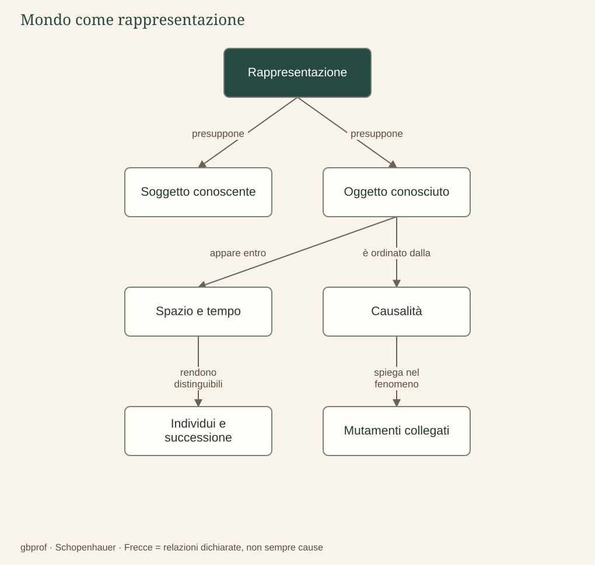

A · Comprendere Schopenhauer · 02
Il mondo come rappresentazione
Vediamo il mondo com’è oppure come la nostra mente può rappresentarlo?
Dire che il mondo è rappresentazione significa affermare che tutto ciò che conosciamo si presenta nella relazione tra un soggetto conoscente e un oggetto conosciuto. Il soggetto non è, qui, la personalità di Gianfranco o di una studentessa, con i propri gusti e pregiudizi: è il polo al quale qualcosa appare. L’oggetto è ciò che viene conosciuto. I due termini sono correlativi, perché parlare di un oggetto in quanto conosciuto implica già un soggetto, mentre un soggetto conoscente è tale in rapporto a un contenuto.
Le forme dell’esperienza
Nell’esperienza ordinaria gli oggetti si dispongono nello spazio, si succedono nel tempo e sono collegati causalmente. Lo spazio permette di distinguere ciò che è qui da ciò che è altrove; il tempo consente di distinguere il prima dal dopo; la causalità organizza i mutamenti come effetti di condizioni determinate. Se vediamo un ramo spezzarsi, cerchiamo ciò che ha prodotto il cambiamento: il vento, un peso, un urto. Non ci limitiamo a ricevere sensazioni isolate, ma le comprendiamo come un mondo di oggetti e di eventi.
Schopenhauer riprende da Kant spazio e tempo come forme a priori, ma rielabora la sua teoria dell’intelletto, assegnando alla causalità il ruolo fondamentale che in Kant appartiene a un sistema più articolato di categorie. Questo rapporto è fatto di continuità e di critica: studiare Schopenhauer non significa imparare una copia semplificata di Kant. In particolare, la causalità vale per i mutamenti del mondo fenomenico; non può essere usata automaticamente per dimostrare una causa posta fuori da ogni esperienza.
Quattro modi di domandare «perché»
Il principio di ragion sufficiente esprime l’ordinamento delle nostre rappresentazioni secondo relazioni di fondamento e conseguenza. Non ogni spiegazione, tuttavia, è una spiegazione fisica. Schopenhauer distingue il divenire, nel quale un mutamento ha una causa; il conoscere, nel quale un giudizio richiede una ragione che lo giustifichi; l’essere, nel quale le determinazioni spaziali e temporali si vincolano reciprocamente; l’agire, nel quale un’azione si comprende attraverso il motivo che opera su un determinato carattere.
La differenza si chiarisce con esempi. Un vetro si rompe per un urto; una conclusione geometrica è giustificata da una dimostrazione; le posizioni delle parti di una figura comportano relazioni determinate; una persona apre la porta perché vuole uscire. Confondere questi piani significa pensare che una dimostrazione spinga una conclusione come una mano spinge un oggetto. La ragione sufficiente non è dunque il nome di un progetto benevolo: spiegabilità dei fenomeni e finalità dell’universo sono problemi differenti.
La rappresentazione possiede validità per l’esperienza, ma non esaurisce ciò che Schopenhauer vuole comprendere. Sapere come un organismo funziona non equivale ancora, per lui, a sapere che cosa significhi essere quell’organismo. Il capitolo successivo cerca il punto nel quale il conoscente non incontra soltanto un oggetto: incontra se stesso come corpo vissuto.
Il problema in un’immagine
Dopo la lettura
Mappa di sintesi


Leggi la mappa in forma testuale
- Rappresentazione presuppone Soggetto conoscente.
- Rappresentazione presuppone Oggetto conosciuto.
- Oggetto conosciuto appare entro Spazio e tempo.
- Oggetto conosciuto è ordinato dalla Causalità.
- Spazio e tempo rendono distinguibili Individui e successione.
- Causalità spiega nel fenomeno Mutamenti collegati.
Fermati sul problema
Quale coppia distingue due forme del principio di ragion sufficiente?
Confronta il tuo ragionamento
L’urto spiega la rottura; una prova giustifica un giudizio. Il fondamento di una conoscenza non è una causa fisica e il principio non assicura una finalità benevola.